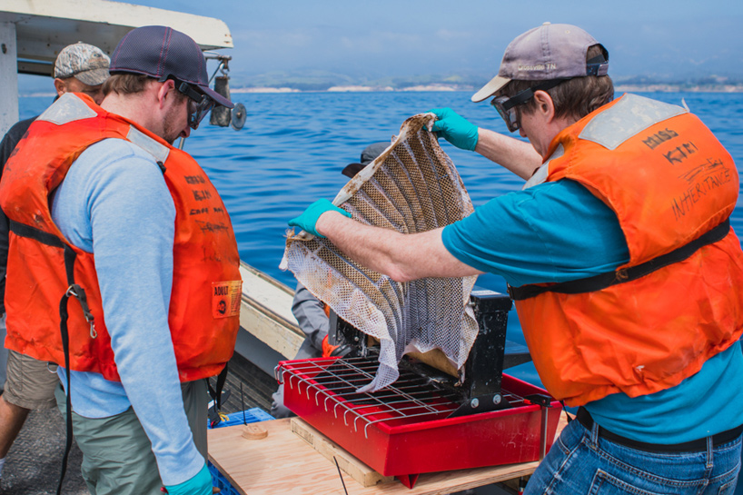
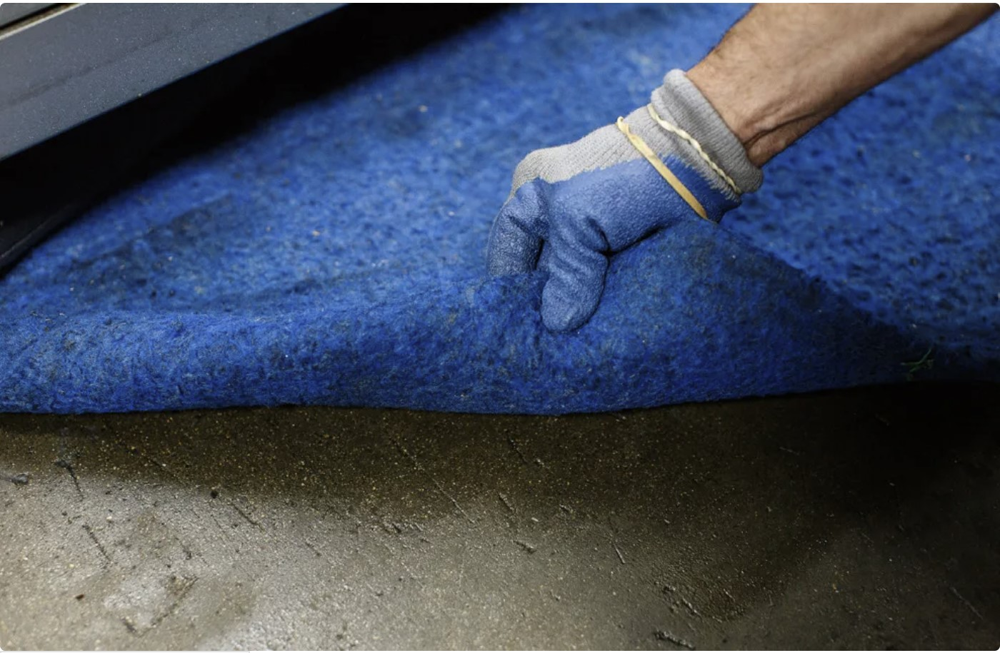
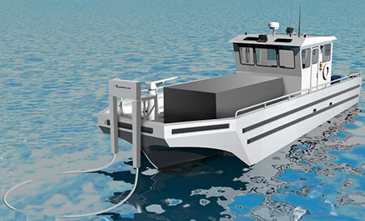
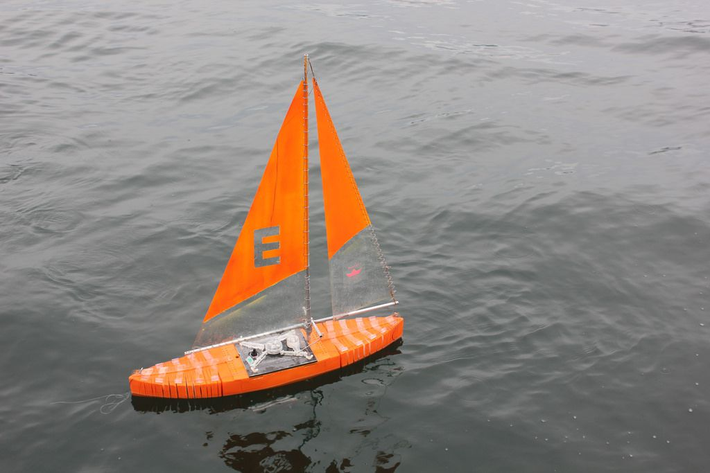

Oleo Sponge
These sponge's are made of a polyurethane foam. They draw oil out of water with their interior surfaces of oleophilic molecues. These sponges tremendously help in managing oil spills cleaning any bodies of water where spills occur. Also, Oleo Sponge's come with a mind-blowing efficiency in oil absorbption upto 90 times its weight! Great part about our sponges is they contain Nanoscale materials which help them in being reused multiple times for clean up.


Natural Oil Absorpent Mat
Our Natural Oil Absorpent Mat is a resuable oil absorpent which may intially be pricey but in the long run is very efficient and decrease human clean-up time. Our Resuable mat is 2-3x more absorpent than absorpent than disposable mats and contains natural fibers that will not rip, tear, or fray. Our mats are heat-sealed to help prevent metal chips from sticking to the mat. Intended for slow drips, splashing, and areas of significant leaking. Mainly used for factories, mechanic shops, etc.
High-Speed Skimming Vessel
Skimming Vessels for Oil Spills are normal but we took it up a notch and made them High-Speed so you can get to the Spill site ASAP! We have also made the skimming machine 20% more efficient than the industry standard and more durable so they will not clog easily. Our Vessels can skim in waves higher than 3 meters which is significantly more than traditional skimmers on the market. Reasonably lightweight according to industry standards. Our main goal with our High-Speed Skimming Vessel is to clean up oil spills as they occur and drastically minimize oil spread in the ocean.

Autonomous Sailboats
Similar to High Speed Skimming Vessel but Autonomous Sailboats are smaller and controlled from shore. Our sailboats can collect upto 2 tonees of oil per trip thanks to its detachable boom. You can count on them to get the job done; also, they even check for radiation in water along with collecting plastic polltion. We are hoping to increase their range soon or implement AI software so they can sail their way through Oil Spill sites.


Oil Filtration Machine
It is exactly what it sounds like! We at Ether Earth along with our Partner Kevin Costner created an Oil Filteration Machine which uses a centrifuge to separate water from oil at astonishing rates of upto 200 gallons per minute. Our Oil Filteration Machine is able to extract 2000 barrels a day which get stored into tanks. Through our machine, water is 99% free from Oil Spills almost like it never occurred! We and Kevin believe in decreasing our enviromental impact, keeping our oceans clean, and most importantly sealife safe.